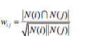

概述
在算法模型上大体可以分基于内容的推荐、基于协同过滤的推荐。
基于人口统计学的推荐: 利用User Profile计算其它用户与其之间的相似度，然后挑选出与其最相似的前K个用户，之后利用这些用户的购买和打分信息进行推荐。
基于内容推荐，即通过内容本身的属性，然后计算内容的相似性，找到与某物品属性相似的物品。
协同过滤: 即不依赖于物品本身的物品属性，而是通过其他相关特征，例如人参与的行为数据，来达到推荐物品的目的。
关于协同过滤，又分为以下几个类别：
- 基于物品的协同，即ItemCF；
- 基于用于的协同，即UserCF；
- 基于模型的协同，即ModelCF。
其中，基于模型的协同又可以分为以下几种类型：
- 基于距离的协同过滤；
- 基于矩阵分解的协同过滤，即Latent Factor Model(SVD)；
- 基于图模型协同，即Graph，也叫社会网络图模型。
相关知识
冷启动 cold start
即在推荐系统初期时，没有任何用户与物品的交集信息，无用户的行为信息，无法通过类似协同的方式进行过滤推荐，这种时候，我们就称推荐 系统冷启动 状态。 除此以外，还有 用户冷启动，和 物品冷启动.
解决方法：
- 用户信息—— 主要是人口统计学信息,注册信息
- 利用物品信息
- 基于内容的推荐
长尾效益、马太效益
在推荐系统中的体现即，部分优质物品，购买的人数较多，即与其相关的的用户行为轨迹会较多。—强者愈强，弱者愈弱。
数据体现：
物品流行度数据在双对数曲线上呈直线 。
解决方法：
给热点物品适当的降权。
相似度计算
常用的有：皮尔逊系数 Jaccard相似度 和 余相似度
一般来说，在基于用户的推荐系统中，皮尔逊相关系数效果要好一些。基于物品的推荐中，余弦相似度方法比皮尔逊的表现更好。
用户相识度计算
基础公式：
N(u)为用户u经有正反馈的物品集合, N(v)为用户v经有正反馈的物品集合.
改进公式：
其中 惩罚了热门物品。
物品相识度计算
基础公式：
分母是喜欢物品i 的用户数，分子是同时喜欢i 和 j的用户数
改进公式：

其中N(i) 惩罚了热门物品
ALS的理解
ALS 是spark 中唯一实现的协同过滤算法，也是我学习的重点。
对于一个users-products-rating的评分数据集，ALS会建立一个的m*n的矩阵。其中，m为users的数量，n为products的数量，值为评分。但是在这个数据集中，并不是每个用户都对每个产品进行过评分，所以这个矩阵是 稀疏 的，用户i对产品j的评分往往是空的.
ALS所做的事情就是将这个稀疏矩阵通过一定的规律填满，这样就可以从矩阵中得到任意一个user对任意一个product的评分，也就是传说中的预测得分。
ALS算法的核心:
- 就是将稀疏评分矩阵分解为用户特征向量矩阵和产品特征向量矩阵的乘积
- 交替使用最小二乘法逐步计算用户/产品特征向量，使得差平方和最小
- 通过用户/产品特征向量的矩阵来预测某个用户对某个产品的评分